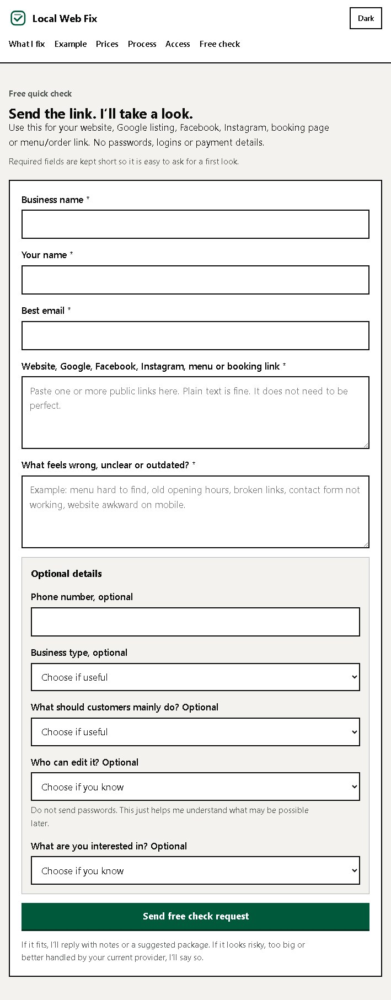
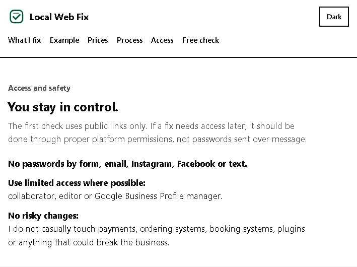

Overview
Local Web Fix is a small service website for UK local businesses. The idea is simple: a business can send a public website, Google listing, social page, menu link or booking link, and I can check whether customers can find the basics quickly.
The site is deliberately small and honest. It does not promise guaranteed rankings, sales or a full rebuild. It explains the free first check, what paid packages include, what is not included, and how access should be handled safely.

The problem
Many small business pages lose trust because simple information is hard to find, inconsistent or awkward on mobile. Menus, opening hours, prices, call buttons, booking links and Google details are often more important to customers than a large redesign.
I wanted the site to explain that problem quickly without sounding like a fake agency or promising results I cannot guarantee.
My role
Everything. There was no brief and no client to please, so every line on the page is a decision I made and have to stand behind: what the service is, what it costs, what I will not touch, and how somebody contacts me without handing over a password.
What I worked on
- Clear landing-page structure for a small service
- Mobile-first layout and readable spacing
- Free-check form flow with simple required information
- Pricing cards for free, £50, £100 and £150 options
- Plain-English privacy and scope pages
- Access guidance that avoids passwords and risky changes
- Copy that sets honest limits instead of overpromising

Design decisions
The people reading this are not developers. They run a takeaway or a barber shop, and they are deciding in about ten seconds whether I am a scam. So it is plain on purpose. Big headings, short lines, and the scope and safety points repeated where people will actually hit them rather than buried in a terms page. It looks closer to a government form than a startup landing page, which is the effect I wanted.
The wording is intentionally practical: free public check first, no passwords, no sales or ranking promises, and paid work only after the small scope is clear.

The hard part was the wording, not the code
There is nothing technically difficult here. It is HTML, CSS and about forty lines of JavaScript for the theme toggle. The work went into the words. Pricing that hides nothing, a scope page that says out loud what I will not do, and an access policy that tells people not to send me passwords, because the alternative is a student holding the logins to somebody else’s livelihood.
What I would improve next
There are no real example reports on it yet, which is the obvious gap. I am asking people to trust a free check without showing them one. The example on the homepage is labelled as fictional and it stays that way until a real business is happy for me to publish theirs.